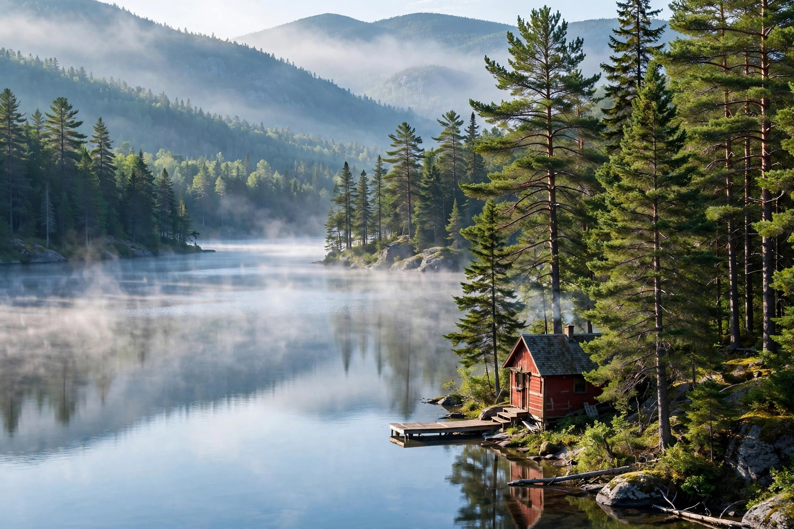

Laurentians Weekend
Two or three days from Montreal — villages, a mountain resort, a national park, and the prettiest bike trail in Quebec.

The Laurentians are the easiest great escape in Quebec: an hour from downtown Montreal and you're in the mountains. This itinerary strings the region's highlights into a weekend — village streets, the Mont-Tremblant resort, the wilder national park, and a car-free morning on the P'tit Train du Nord trail. It works in every season; we've noted the seasonal swaps below.
Day 1 — Saint-Sauveur and the lower Laurentians
Leave Montreal mid-morning on Autoroute 15 north and be in Saint-Sauveur for lunch. Spend the afternoon on Rue Principale — the boutiques and cafés are the point here, not any single attraction. If you're here in ski season, Sommet Saint-Sauveur's slopes are minutes from the village and famously stay open late into spring; in summer, the water park and mountain coaster take over the same hill.
Late afternoon, drive 20 minutes north to Val-David. This former hippie enclave turned artist village is worth the detour for its galleries and for the Parc régional de Val-David–Val-Morin if you want a short hike or, in winter, some of the region's best cross-country skiing. Overnight in Saint-Sauveur or push north to Sainte-Agathe-des-Monts, the old "metropolis" of the Laurentians on the shores of Lac des Sables.
Day 2 — Mont-Tremblant: resort and mountain
Head north on Route 117 to Mont-Tremblant. Start at the resort village — ride the panoramic gondola to the summit for the view over the Laurentians rolling to the horizon, then walk the pedestrian village. In winter, this is ski day: the resort is the largest in the Laurentians with the most vertical, and the south-side runs are the classics. In summer, swap the skis for the luge, the zip lines, or a round on one of the area's golf courses.
Afternoon: cross into Parc national du Mont-Tremblant (SEPAQ) for the wilder half of the mountain. The La Roche trail is the signature short hike — a steady climb to a lookout over the lakes below. In fall, this is peak colour country; the park's maple stands turn in the last week of September. Overnight in the Tremblant area or at the park's campground or huts if you booked ahead.
Day 3 (optional) — P'tit Train du Nord
If you have a third day, spend it on two wheels. The P'tit Train du Nord is a 232-kilometre cycling trail on a former railway line running from Mont-Laurier down through the Laurentians to Saint-Jérôme. The prettiest and easiest section for a day ride is between Sainte-Agathe-des-Monts and Saint-Jérôme: gentle grades (it's a rail trail), small stations converted to cafés, and the Rivière du Nord alongside much of the way. Bike rentals are available in Sainte-Agathe and Saint-Jérôme; ride as far as you like and turn around. In winter, sections of the trail become a cross-country ski and snowmobile corridor.
Head back to Montreal on the 15 in the late afternoon — about 90 minutes from Sainte-Agathe, traffic permitting.
Seasonal swaps
- Winter (Dec–Mar): ski Tremblant or Saint-Sauveur, skate on Lac des Sables in Sainte-Agathe, try the dogsledding and snowshoe outfitters around Val-David.
- Spring (Apr–May): maple season — sugar shacks around Saint-Sauveur and Sainte-Adèle serve traditional meals; mud season makes hiking iffy, so stick to villages.
- Summer (Jun–Aug): lake swimming, the Tremblant luge and gondola, cycling the P'tit Train du Nord.
- Fall (late Sep–mid Oct): the main event. Go midweek if you can; book lodging early for the first two October weekends.
Practical notes
The whole weekend runs on two roads: the 15 for speed, the 117 for scenery. Friday-evening traffic out of Montreal on the 15 is genuinely bad in ski season and fall — leave after 7 p.m. or before 3 p.m. if you can. The region is well set up for visitors, but the national park's huts and popular campgrounds book out through SEPAQ, sometimes months ahead for fall weekends. And a final local tip: the bakery and fromagerie stops along Route 117 are not tourist traps — they're where Montrealers actually stop.